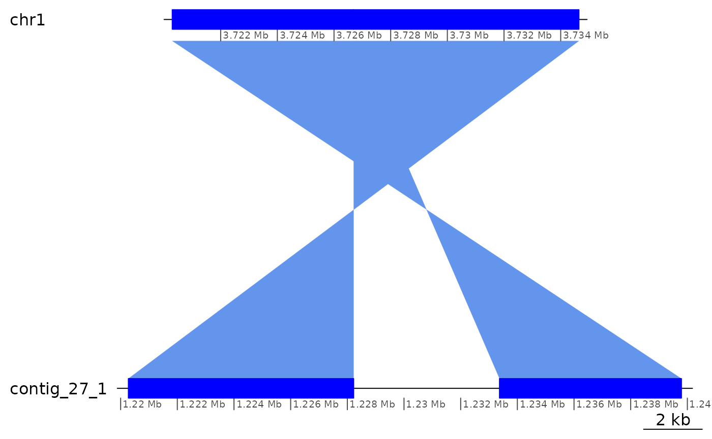

vignettes/TandemSiteDuplications.Rmd
TandemSiteDuplications.Rmd
knitr::opts_chunk$set(cache = TRUE)See the vignette("OikScrambling", package = "OikScrambling") for general details on package and data load.
See vignette("LoadGenomicBreaks", package = "OikScrambling") for how the different GBreaks objects are prepared.
suppressPackageStartupMessages({
library('GenomicBreaks')
library('ggplot2')
library("BreakpointsData")
library("Biostrings")
})
genomes <- OikScrambling:::loadAllGenomes(compat = F)
load("BreakPoints.Rdata")
reps <- OikScrambling:::loadAllRepeats(compat = F)
transcripts <- OikScrambling:::loadAllTranscriptsGR(compat = F)Here we explore regions of interest that feature an insertion-deletion site flanked by a tandem site duplication.
In our genomic breaks objects, representing one-to-one alignments, one copy of the tandem-duplicated site is part of the alignment, and the other is not.
TSD
query …──────────━━━━━─────────━━━━━─────────────…
alignment ............... .............
target …──────────━━━━━ ─────────────…
pat ++++
range --------==========----------
sub ++++ (or ---- if rev = F)
alignBreakPoints <- function(gr, n = 20, reverseComplement = FALSE) {
if (isFALSE(reverseComplement)) reverseComplement <- identity
pairwiseAlignment(getSeq(gr |> flank(n, both = T, start = T)),
getSeq(gr |> flank(n, both = T, start = F)) |> reverseComplement(),
type="global")
}pat ++++
range --------==========----------
sub ++++ (or ---- if rev = F)
alignEnds <- function(gr, n = 20, reverseComplement = FALSE) {
resize_ <- function(...) resize(...) |> trim() |> suppressWarnings()
if (isFALSE(reverseComplement)) reverseComplement <- identity
pairwiseAlignment(getSeq(gr |> resize_(n, fix = "start")),
getSeq(gr |> resize_(n, fix = "end")) |> reverseComplement(),
type="global")
}pat +
range --------==========----------
sub +
searchForTSDs <- function(gr, n = 8) {
pairwiseAlignment(getSeq(gr |> resize(n, fix = "start")),
getSeq(gr |> flank(n, start = F)),
type="global")
} ++++ ++++
query …──────────────────────────────────────────…
target …─────────────── ─────────────…
++..............++
alignToSelf <- function(gr) {
pairwiseAlignment(getSeq(gr),
getSeq(gr) |> reverseComplement(),
type="global")
}ROI1 identified and analysed by Martin Frith. Here I am just transposing the finding in Bioconductor’s context.
In contig_27_1 (which is most of Kume genome’s chr1’s short arm), there is an indel region where the aligned regions in the Okinawa genome are directly in contact, but on the Kume genome the aligned regions are separated by a 5146-bp gap.
(The regions align on opposite strands, so the plot looks strange if you are not familiar with it.)
ROI1 is represented by a GBreaks object of lenght 2. The Kume-specific sequence can be obtained with the cleanGaps function.
(ROI1 <- gbs$Oki_Kum |> subsetByOverlaps(GRanges("chr1:3720291-3734643")))## GBreaks object with 2 ranges and 8 metadata columns:
## seqnames ranges strand | score query
## <Rle> <IRanges> <Rle> | <numeric> <GRanges>
## [1] chr1 3720291-3726692 - | 36253 contig_27_1:1233370-1239790
## [2] chr1 3726693-3734643 - | 44991 contig_27_1:1220273-1228223
## Arm rep repOvlp transcripts flag
## <factor> <CharacterList> <integer> <Rle> <character>
## [1] short unknown,rnd 674 <NA> Col
## [2] short rnd,ltr-1,unknown,... 886 <NA> <NA>
## nonCoa
## <logical>
## [1] FALSE
## [2] FALSE
## -------
## seqinfo: 19 sequences from OKI2018.I69 genome
plotApairOfChrs(ROI1)
cleanGaps(ROI1$query) |> as.data.frame()## seqnames start end width strand
## 1 contig_27_1 1228224 1233369 5146 *Interestingly, the unaligned region in Kume contains two repeat elements in inverted tandem. You can see them in the alignment below, of the left-side boundary of the unaligned region to the reverse-complement of its right side.
ROI1$query |> cleanGaps() |> alignBreakPoints(30, rev=TRUE)## Global PairwiseAlignmentsSingleSubject (1 of 1)
## pattern: TAGCTTCTTGCAGAGCTTTTTCAGATCCAAGATACGTAGGCTTACCGGACTAAAATTTGG----
## subject: CAGAAAGTTTCGAAGAGAATGCG--TCGTATCTT--TAGGCTTACCGGACTAAAATTTGGCCGA
## score: -100.7614Click here to see the full pairwise alignment between the Kume insert and its own reverse-complement.
ROI1$query |> cleanGaps() |> alignToSelf() |> writePairwiseAlignments()## ########################################
## # Program: Biostrings (version 2.62.0), a Bioconductor package
## # Rundate: Tue Mar 8 17:03:15 2022
## ########################################
## #=======================================
## #
## # Aligned_sequences: 2
## # 1: P1
## # 2: S1
## # Matrix: NA
## # Gap_penalty: 14.0
## # Extend_penalty: 4.0
## #
## # Length: 5518
## # Identity: 3398/5518 (61.6%)
## # Similarity: NA/5518 (NA%)
## # Gaps: 744/5518 (13.5%)
## # Score: -6519.19
## #
## #
## #=======================================
##
## P1 1 GATACGTAGGCTTACCGGACTAAAATTTGGCCGATTTTTCTAGCTTAGTG 50
## || ||||||||||||||||||||||||||||||||||||||||||
## S1 1 TTTA----GGCTTACCGGACTAAAATTTGGCCGATTTTTCTAGCTTAGTG 46
##
## P1 51 GGGGGGTCATATGATACATTTTTAGAAAGCTCAGAAGCTGGGCTTTCATT 100
## ||||||||||||||||||||||||||||||||||||||||||||||||||
## S1 47 GGGGGGTCATATGATACATTTTTAGAAAGCTCAGAAGCTGGGCTTTCATT 96
##
## P1 101 TGAGCCTAAAATCAGGGGGTCTGGGTCATGCCCGCAAGGCAAATTATGGG 150
## ||||||||||||||||||||||||||||||||||||||||||||||||||
## S1 97 TGAGCCTAAAATCAGGGGGTCTGGGTCATGCCCGCAAGGCAAATTATGGG 146
##
## P1 151 ACCTGAAGTCCCAAAATAGGCACTAGAACTCTTCAAACTATTTTTTTGGA 200
## ||||||||||||||||||||||||||||||||||||||||||||||||||
## S1 147 ACCTGAAGTCCCAAAATAGGCACTAGAACTCTTCAAACTATTTTTTTGGA 196
##
## P1 201 GGCGGGCCGGCCTCCAAAACCGTCGAGACTTATATATTTAGAAAGCTCAG 250
## ||||||||||||||||||||||||||||||||||||||||||||||||||
## S1 197 GGCGGGCCGGCCTCCAAAACCGTCGAGACTTATATATTTAGAAAGCTCAG 246
##
## P1 251 GCTCTGGGCTTTCAGATGAGCCCAAGAAATCTTAGTGCAAATGTCTCTGC 300
## ||||||||||||||||||||||||||||||||||||||||||||||||||
## S1 247 GCTCTGGGCTTTCAGATGAGCCCAAGAAATCTTAGTGCAAATGTCTCTGC 296
##
## P1 301 GGCCACCTGGGGGCGCTAGAAGTTGGGTGAAAAACCGGAAGTTCCGGAAA 350
## ||||||||||||||||||||||||||||||||||||||||||||||||||
## S1 297 GGCCACCTGGGGGCGCTAGAAGTTGGGTGAAAAACCGGAAGTTCCGGAAA 346
##
## P1 351 ACTCGGATTTAGAATTCTAAACTCTTATATTATGTTTGTAAAACATAAAC 400
## ||||||||||||||||||||||||||||||||||||||||||||||||||
## S1 347 ACTCGGATTTAGAATTCTAAACTCTTATATTATGTTTGTAAAACATAAAC 396
##
## P1 401 AAACAACAATTGACGCTCAAAAATGATGAACCGCGGTCGAACCGGGTGGT 450
## ||||||||||||||||||||||||||||||||||||||||||||||||||
## S1 397 AAACAACAATTGACGCTCAAAAATGATGAACCGCGGTCGAACCGGGTGGT 446
##
## P1 451 CAACCAGGTGGTTCATCGCGGTTCAACTCTAGAAACCTTCTAAAACATGG 500
## ||||||||||||||||||||||||||||||||||||| ||||||||||||
## S1 447 CAACCAGGTGGTTCATCGCGGTTCAACTCTAGAAACCGTCTAAAACATGG 496
##
## P1 501 GAATATGGGTATTTTTCGACGGGAAATTGAATGAAAATGAAAATAAAAGT 550
## ||||||||||||||||||||||||||||||||||||||||||||||||||
## S1 497 GAATATGGGTATTTTTCGACGGGAAATTGAATGAAAATGAAAATAAAAGT 546
##
## P1 551 TGAACCACGGTCGAACCACGTGGTCAACCACCCGGTTAACCGCGGTTCAA 600
## |||||||||||||||||||||||||||||| |||| | ||||||||||
## S1 547 TGAACCACGGTCGAACCACGTGGTCAACCAGGTGGTTCATCGCGGTTCAA 596
##
## P1 601 CTCTAGAAACCTTCTAAAACATGGGAATATGGGTATTTTTCGACGGGAAA 650
## |||||||| |||||||||| | | |||||||||||||||||||||||||
## S1 597 CTCTAGAATTCTTCTAAAACCTTGCAATATGGGTATTTTTCGACGGGAAA 646
##
## P1 651 TTGAATGAAAATGAAAATAAAAGTTGAACCGCGGTCAAACCGGGTGGTCA 700
## |||||||||| |||||||||||||| |||||||||| ||| |||||||||
## S1 647 TTGAATGAAATTGAAAATAAAAGTTAAACCGCGGTCGAACTGGGTGGTCA 696
##
## P1 701 ACCAGGTGGTTCATCGCGGTTCAACTCTAGAAACCTTCTTAAACATGGCA 750
## |||||||||||| | |||||||||||||||||||||||| ||||||| |
## S1 697 ACCAGGTGGTTCCTTGCGGTTCAACTCTAGAAACCTTCTAAAACATGATA 746
##
## P1 751 ATATGGGTATTTTTCGACGGGAAATTTGATTTTTATGTTTTTTTTATAAG 800
## |||| ||||||||||||||| ||| | || | | | ||| | |
## S1 747 ATATTGGTATTTTTCGACGGCAAAGTCTATAATAAGCTAAAATTTCTTAA 796
##
## P1 801 ATCAAAACAACAAAACAAGATAATTTCCAAAAAACCATTTTATTCATTCT 850
## | || | | | ||| ||| |||| ||| |||
## S1 797 TTTGAATGA---------GTTTATTG---AAATTTTATTTCATTAATTGA 834
##
## P1 851 GTGGTTCAGA--AGGTTCAGAAGAAATTCCTTCAAAATCCATCTCGTC-G 897
## |||| | | ||| ||| | | || ||||| | |
## S1 835 AAGGTTTCGTCCAAAATCACTTATTTTTCTTCCTTGATTCATCTTCTGAG 884
##
## P1 898 ACATTCTGTTCTTCTTCCTCGTTCATTTCGTCCAATTCCTTTTCGACTAT 947
## || ||| | | ||| | | || | || | | ||||||
## S1 885 TCAATCT-TGCCACTTGCGCAGTCTTATCAGTCGGCGCTGATTCGACGCG 933
##
## P1 948 TTCTTCCACTTCTTCAACAATCTCTTCCTCTCGTTCTTCCTCGTCATCTT 997
## || || ||| ||| ||| ||| |||| | |||| || ||| | |
## S1 934 CGCT-CCGCTT--TCACTTATC-CTTTTTCTCTTCCTTC-TC-TCACCGT 977
##
## P1 998 CGTTGATTTCGATTTCAGCCTCTCGCTCGTTCTTGTCTTTGTATTTCATT 1047
## | || |||| ||| ||| || |||| | | || || || |
## S1 978 CATTTATTTTTCTTTT----TCTTTCTTTTTCTCG-CAATGGATG-CAAT 1021
##
## P1 1048 TGGTCCTTCTTTTCGAGTTCCTTTGCTTTCTTCTCATTTTTCGCTCGTTC 1097
## | | | || || || | ||| |||| ||| | | || |
## S1 1022 CGATGATCCTC-----GTACCACT--TTTAAGCTCAATTT-CACCCGAGC 1063
##
## P1 1098 AACCATCGCTTTTGTAATCTCTACAAGACATTCATCATCCCGAAGGTCTT 1147
## || | | | ||| | ||| |||| |||| ||
## S1 1064 AATGACCATTCTTG-AGCATCTTGAAGAGATTCCTCC------------- 1099
##
## P1 1148 CAAGCCAGAGACTTGTTTTATTGTACTGAATGAGACATTGTTAATATAAT 1197
## ||||| | |||||| || | || | |||
## S1 1100 --------AGACTCAT-------------ATGAGAAATC-TCAACAAAAT 1127
##
## P1 1198 AA--AAATAGGCCAAAATTACCATGGAAACAGCCACGACAAATGTTCTTC 1245
## | || |||| |||| || | || | | | | || |
## S1 1128 GACGAAGAAGGC-----TTACGCGAGAGAAAGAAAGTA----TCTGCTCC 1168
##
## P1 1246 GAAGTGAAAGCCTCG-ATTGTGTTCTTTCCAGCTCCTTTAATGTCCCAAA 1294
## || | | | | | | || || ||||| | || || ||
## S1 1169 TAATTCTGCGGCAAGGAGACTTTTGTTAGAAGCTCTT---ATTTCTGAAG 1215
##
## P1 1295 CAGGGCTTCCACGCGT-CGAGAAGTCGCTGTCAAAAAGCTGTTTTCGTTC 1343
## | ||| | | | | || | | ||||| || ||
## S1 1216 GTAAGATTCAAAGGTTTCTCTTCGTTGATTTCAAA--------TTAATT- 1256
##
## P1 1344 TGGACTCGAGTTGCGATTGCGTCCCATTTTTCTTTCTCCTTCGT-GAACT 1392
## | | || |||| || | |||||| ||| ||| ||| |
## S1 1257 TAAA---GAAAAGCGACCGCAT----TTTTTCGAAATCC--CGTCGAATT 1297
##
## P1 1393 TCTCAAAGCTGCGACCGACAGACTGCCTAGTAACGCTGTCCAAGTGCTTC 1442
## || | | | ||| || | | | | || || |||||
## S1 1298 TCAAGTGGGTCGGGACGAGAGGCCGTGT-GAAAAGC----CAAGTCGACA 1342
##
## P1 1443 TTTTGTTCACCATCAAGAGCTCGGTACTGGATGAGTAGTCGCTGCTTGAC 1492
## | ||| | | ||| |||| | || | | | ||| | |
## S1 1343 AGATCTTCTCGA--AAG---TCGGAATTGAAAAA--AACCGCCAGTATCC 1385
##
## P1 1493 TGTT------TTTGTCTCATCGTTGTCGTCGTTGGCCAGTTCTTGAAGC- 1535
## | | ||||| ||| || | |||| | | ||||
## S1 1386 TTTCGGGAAGTTTGT-TCAAGAACTTCCAAGGCAGCCACCACGTCAAGCG 1434
##
## P1 1536 -ATTCG----CCAGTAAATATTCTTCTCAGATGCCATCATTCGCTTGTAG 1580
## | ||| | || || ||||| || || | | ||| | ||
## S1 1435 AAATCGGAATCAAGGAAGAGATCTTCACAAATCTCC-CTTTCTCAGGT-- 1481
##
## P1 1581 TAGTC-TTCCAAATTCGCGATAGCTTCTACAATCTTTTTCAAGGAGCTTG 1629
## || || | ||| | | ||| ||| |||| |||| |
## S1 1482 ---TCATTACCTTTTCCC--TCCTTTCGTTAATATTTTAACTCAAGCTCG 1526
##
## P1 1630 --ATGTTTCACTGACAGCTGC--ATGATATTTCTTCA-AGGAGCCATAGA 1674
## |||| | ||| | || |||| | | ||| | || |||| |
## S1 1527 CCATGTCCGA-TGAT-GATGACGATGACGTCTTTTCTGAAGAACCATCAA 1574
##
## P1 1675 AAATGGCAAATGGGATGCAAGCAAGGAGGAGAACGAGTCTTTTGTGGGAT 1724
## || | || || | || || ||| ||| || |
## S1 1575 ------CATCT------CACGCGATGATCCGA-CGA-TCTCAGCCGGAAG 1610
##
## P1 1725 CAACATTCGATCAACAACAACAACAACAACAACAACAACTACAACTA-CA 1773
## || | || || || || || || || | | | | | | ||
## S1 1611 AAAAAGAAGAAGAAAAAGAAGAAGAAGAAGACGAGTCGCGAAAGTTGTCA 1660
##
## P1 1774 ACTAC----AACTACAACTACAACTA-CAACTAGTGATAGATGAACCTTT 1818
## || | | | | | | ||| | || | ||| ||| | ||
## S1 1661 ACATCGGCGAGCGAGACATTCAAAAAACAGCGGCTGAGCCTTGACTCATT 1710
##
## P1 1819 -----GCCT------------ATTTTCCTTTG-CAGCTTTCTTCATTTCC 1850
## || | |||||| | | ||||| || ||
## S1 1711 AGACAGCGTCGATGGCCGTGGATTTTCGAAAGTCTCCTTTCATCCGAACC 1760
##
## P1 1851 TCATCATTTTCTTCGTGAGGCCAGA--ATGACTCCAGAAAATCGCGAAGA 1898
## | |||| | || || ||| ||| |||| || || |||
## S1 1761 TGATCAAGATTCTC-TGTTGCCTTCTCATGCGCGGAGAACATGGC-AAGT 1808
##
## P1 1899 AATTTCGCCGTGCTACTAGAATCCCCTGCGTAGCCCTGTAGAAGCGTTC- 1947
## || | | || || ||| | || | | | || | ||||
## S1 1809 CGTT--GTCAAACTTCTTGAACGTCTTGTGCAAGTGCATCGATGAGTTCA 1856
##
## P1 1948 -GGAT-AGTAG-------------GCATGATCAA----AACC---AGGCT 1975
## |||| || | ||| |||||| || | ||| |
## S1 1857 AGGATCAGACGCCCCCTTCGATCAGCACGATCAATGAGAAACGGTAGGGT 1906
##
## P1 1976 TCTCATG-TTGCTTGGGAT-GATCATGAATCTTG-AGCCCATGTCTT--- 2019
## |||| | ||| || || || | |||||| ||| || |
## S1 1907 TCTCTTCCTTGATTTCAATTGAAGCT-AATCTTTTAGCTACTGCATCGAT 1955
##
## P1 2020 --TTTTAAGATTTTTAATATTG------AAATCAAGGAAGAGTTTGACAC 2061
## ||| | | | || | | |||| ||| || | |||
## S1 1956 ACTTTGACGGAATCCCATCTGGCAAAAGAAATTGAGGCAGCG---GACGA 2002
##
## P1 2062 ACGATGATGATTTCGATGACACAAACGCATTCAGCACCATCGAAAAC-CC 2110
## | | || || | | || | ||| || | | || | | | ||
## S1 2003 GGGTGGCTGTTTGCTTTTGGACGA-CGC---CACCCTCGTCCATAGCGCC 2048
##
## P1 2111 AAGTCTGGCACCCAAAATGAATCAAACAAG--GACTTTTCAAAAAAAAAG 2158
## ||| | |||| || || | | | | | || |
## S1 2049 AAGGC---CACCGGAATTGTCTTTATTACGCCGGCT-------------G 2082
##
## P1 2159 GGTTGAAAATTTTTCTAAGTTTTTCAAAGAAATAGTGCCGCCTGATAAGG 2208
## || | ||| | | | | ||| | | ||||| | || |
## S1 2083 GGAAGTCCCTTTGCATCGGCCTGTATGAGACTTTG-GCCGC---AAAAAG 2128
##
## P1 2209 CTAAGCCAGTTATCGGCAAAAATTTCTAGCGTCCTAAACGGCTGGTACTA 2258
## ||| || || ||| | |||| | ||| |||
## S1 2129 TGAAGACATGGCTCCGCAGA---TTCTTG----------GGCATCTAC-- 2163
##
## P1 2259 GGGAGTTTTCCACCTTATTTTTC-GCGCTGAATTC--AAAT----TTTAT 2301
## ||| || |||| || || | ||| || || |||| ||| |
## S1 2164 ----GTTCTCTTCCTTTTTGGTCTGTGCTCAAGTCGAAAATCGCCTTTCT 2209
##
## P1 2302 GATAAGGAATCGCTAAAGTCTCCGACTC---TGCTATTACTTTTCATACT 2348
## | | || ||| | | || ||| || | | |||
## S1 2210 TGTGTCGGATAGCTGTGCAGCTCAAATCAAGTGCAATGAGCT--CAT--- 2254
##
## P1 2349 CCCTCTAGAATTTCTCACTAGAATATTCAATAATTTCTAACATTTGAAAA 2398
## | || | | | || | |||| || ||| | | |
## S1 2255 -CATCAAAAGTCTCCAAGAAGAAGATGGAATCGACGCCATC--------- 2294
##
## P1 2399 AGTGCTGGTTTGTTCCATTTTTGATTCTAGCCTGAGGTTTTTGAAGATGC 2448
## | | ||||| | | | | |||||| || | |
## S1 2295 -GCCATCCTTTGT-CAAATGCACAGCACAGCCTG--------GATG--GG 2332
##
## P1 2449 TGAATGCGTTTTTTACATCAAAATCATCATTGGGTGCTAAACTCTTCCTT 2498
## | ||| | |||| |||| |||||||||
## S1 2333 TAAATTCATTTT---------------CATT----------CTCTTCCTT 2357
##
## P1 2499 GATTTCAATAAT------AAAAATCCGTTCCTTGGCCAAACATTCTGCTT 2542
## ||||||||| | |||||| | ||| |||| | | |||
## S1 2358 GATTTCAATTACCTTTAGAAAAATACA--CCTA---CAAAGACTGGGCT- 2401
##
## P1 2543 CTGCATCCGAACCAGTCCTCAAGATAAGCTTCGAGGATGTTTCGCAGGTT 2592
## | || | | || || || || |||| || | | | | |
## S1 2402 CAGCCTGCAAAAAAGACC-CA-------CTTCCAGCCGAATCCAGACGAT 2443
##
## P1 2593 GTCTCGATTGTGGCCTGTCAAGTTCAGCGTTCGCGAGCCGAAGAGTTTCA 2642
## | || || || | | | || | | | | ||| || ||
## S1 2444 GCTTCAAT---GGACCAGCCTGATCCTCTTCTTCAA----AAGGCTTCCA 2486
##
## P1 2643 TGGTAGCCATGTGGACCTTGGAAGCCTT----TTGAAGAAGAGGATCAGG 2688
## ||| |||| ||| || || ||| | | | | || | |
## S1 2487 AGGTCCACATGGCTACCATGAAACTCTTCGGCTCGCGAACGCTGAACTTG 2536
##
## P1 2689 CTGGTCCA---TTGAAGCATCGTCTGGATTCGGCTGGAAG-------TG- 2727
## | ||| | || || | | | | || |||| ||
## S1 2537 ACAGGCCACAATCGAGACAACCTGCGAAACATCCTCGAAGCTTATCTTGA 2586
##
## P1 2728 GGTCTTTTTTGCAGGCTGA-GCCCAGTCTTTGT---AGGT--GTATTTTT 2771
## || || || | | || || || | | |||| ||| | ||||||
## S1 2587 GGACTGGTTCGGATGCAGAAGCAGAATGTTTGGCCAAGGAACGGATTTTT 2636
##
## P1 2772 CTAAAGGTAATTGAAATCAAGGAAGAG----------AATGA-------- 2803
## | | ||||||||||||||||| |||||
## S1 2637 ATTA------TTGAAATCAAGGAAGAGTTTAGCACCCAATGATGATTTTG 2680
##
## P1 2804 -------AAATGAATTTACC--CATC--------CAGGCTGTGCTGTGCA 2836
## ||| | ||| | | | || |||||| | |
## S1 2681 ATGTAAAAAACGCATTCAGCATCTTCAAAAACCTCAGGCTAGAATCAAAA 2730
##
## P1 2837 TTTGA-CAAAGGATGGC----------GATGGCGTCGATTCCATCTTCTT 2875
## | || |||| | | | | | ||| || ||||
## S1 2731 ATGGAACAAACCAGCACTTTTTCAAATGTTAGAAATTATTGAATATTCTA 2780
##
## P1 2876 CTTGGAGACTTTTGATG----ATGAGC--TCATTGCACTTGATTTGAGCT 2919
## | || | | | || | |||| | || ||| || | |
## S1 2781 GTGAGAAATTCTAGAGGGAGTATGAAAAGTAATAGCA---GAGTCGGAGA 2827
##
## P1 2920 GCACAGCTATCCGACACAAGAAAGGCGATTTTCGACTTGAGCACAGACCA 2969
## ||| || | | | ||| |||| || || ||| | || |
## S1 2828 CTTTAGCGATTCCTTATCATAAA----ATTT--GAATTCAGCGC-GAAAA 2870
##
## P1 2970 AAAAGGAAGAGAAC------GTAGATGCC----------CAAGAA---TC 3000
## | |||| || ||| ||| ||| | |||| |
## S1 2871 ATAAGGTGGAAAACTCCCTAGTACCAGCCGTTTAGGACGCTAGAAATTTT 2920
##
## P1 3001 TGCGGAGCCATGTCTTCACTTTTT---GCGGC-CAAAGTCTCATACAGGC 3046
## ||| || || ||| | || | ||||| | | ||| | | |
## S1 2921 TGCCGATAACTGGCTTAGCCTTATCAGGCGGCACTATTTCTTTGAAAAAC 2970
##
## P1 3047 CGATGCAAAGGGACTTCCC-------------AGCCGGCGTAATAAAGAC 3083
## | ||| | ||| || | || | | |
## S1 2971 TTAGAAAAATTTTCAACCCTTTTTTTTTGAAAAGTCCTTGT--TTGATTC 3018
##
## P1 3084 AATTCCGGTGGC---CTTGGCGCTATGGACGAGGGTG---GCGTC-GTCC 3126
## | || |||| | ||||| | | | || | | || |||| ||
## S1 3019 ATTTTGGGTGCCAGACTTGG-GTTTTCGATGGTGCTGAATGCGTTTGTGT 3067
##
## P1 3127 AAAAGCAAACAGCCACCCTCGTC---CGCTGCCTCAATTTCTTTTGCCAG 3173
## | | || || | | ||| | || ||| ||||| |
## S1 3068 CATCGAAATCATCATCGTGTGTCAAACTCTTCCTTGATTTCAAT------ 3111
##
## P1 3174 ATGGGATTCCGTCAAAGTATCGATGCAGTAGCTAAAAGATT-AGCTTCAA 3222
## || | | | ||| | || ||| || |||| | |||
## S1 3112 ATTAAAAATCTTAAAAA-----AGACATGGGCTCAA-GATTCATGATCA- 3154
##
## P1 3223 TTGAAATCAAGGAAGAGAACCCTACCGTTTCTCATTGATCGTGCTGATCG 3272
## | || ||| | ||||| ||| |||| ||||| ||| |
## S1 3155 TCCCAAGCAAC-ATGAGAAGCCTG--GTTT-----TGATCATGCCTA--- 3193
##
## P1 3273 AAGGGGGCGTCTGATCCTTGAACTCATCGATGCACTTGCACAAGACGTTC 3322
## || |||| |||| | || | | | || | |||
## S1 3194 ----------CT-ATCC--GAACGCTTCTACAGGGCTACGCAGGGGATTC 3230
##
## P1 3323 AAGAAGTTTGAC--AACGACTT-GCCATGTTCTCCGCGCATGAGAAGGCA 3369
## || || | | || ||| || || |||| ||| |||
## S1 3231 TAGTAGCACGGCGAAATTTCTTCGCGATTTTCTGGAGTCATTCT--GGCC 3278
##
## P1 3370 ACA-GAGAATCTTGATCAGGTTCGGATGAAAGGAGACTTTCGAAAATCCA 3418
## || || | |||| ||| || ||||| | | ||||||
## S1 3279 TCACGAAGAAAATGATGAGGAAATGAAGAAAGCTG-CAAAGGAAAATA-- 3325
##
## P1 3419 CGGCCATCGACGCTGTCTAATGAGTCAAGGCTCAGCCGCTGTTTTTTGAA 3468
## ||| | | | | | | ||| | | | | ||| || |
## S1 3326 -GGCAAAGGTTCATCTATCACTAGTTGTAGTT--GTAGTTGTAGTTGTAG 3372
##
## P1 3469 TGTCTCGCTCGCCGATGTTGACAACTTTCGCGACTCGTCTTCTTCTTCTT 3518
## | | | | | | | ||||| | || || || ||
## S1 3373 T-TGTAGTT-GTAGTTGTTG----------------TTGTTGTTGTTGTT 3404
##
## P1 3519 CTTTTTCTTCTTCTTTTTCTTCCGGCTGAGA-TCGT-CGGATCATCGCGT 3566
## || || || | || | || ||| |||| | || | || |
## S1 3405 GTTGTTGATCGAATGTTGATCCCACAAAAGACTCGTTCTCCTCCTTGCTT 3454
##
## P1 3567 GAG-----------ATGTTG-ATGGTTCTTCAGAAAAGACGTCATCGTCA 3604
## | || || |||| || | ||| | | |||| ||
## S1 3455 GCATCCCATTTGCCATTTTCTATGGCTCCTT-GAAGAAATATCATG--CA 3501
##
## P1 3605 TCA-TCATCGGA-CATGGCGAGCTTGAGTTAAAATATTAACGAAAGGA-- 3650
## | ||| | | ||| | |||| |||| ||| ||| |
## S1 3502 GCTGTCAGTGAAACAT--CAAGCTCCTTGAAAAAGATTGTAGAAGCTATC 3549
##
## P1 3651 GGGAAAAGGTAATGA-----ACCTGAGAAAGGGAG-ATTTGTGAAGATCT 3694
## | ||| | || || || | ||| | | || || |||||
## S1 3550 GCGAATTTGGAA-GACTACTACAAGCGAATGATGGCATCTGAGAAGAATA 3598
##
## P1 3695 CTTCCTTGATTCCGATTTCGCTTGACGTGGTGGCTGCCTTGGAAGTTCTT 3744
## || || | ||| | |||| | | |||| | || |
## S1 3599 TTTACTGG----CGAAT--GCTTCAAGAACTGGCCAACGACGACAACGAT 3642
##
## P1 3745 GA-ACAAACTTCCCGAAAGGATACTGGCGGTTTTT--TTCAATTCCGA-C 3790
## || ||||| | || | ||| | | | || | |||| |
## S1 3643 GAGACAAAA------ACAGTCAAGCAGCGACTACTCATCCAGTACCGAGC 3686
##
## P1 3791 TTTCGA----GAAGATCTTGTCGACTTGG----CTTTTC-ACACGGCCTC 3831
## | | || ||| | |||||| | || | | | | ||
## S1 3687 TCTTGATGGTGAACAAAAGAAGCACTTGGACAGCGTTACTAGGCAGTCTG 3736
##
## P1 3832 TCGTCCCGACCCACTTGAAATTCGACG--GGATTTCGAAAAA----ATGC 3875
## ||| | | | ||| ||| ||| ||| |||||| | ||
## S1 3737 TCGGTCGCAGCTTTGAGAAGTTC-ACGAAGGAGAAAGAAAAATGGGACGC 3785
##
## P1 3876 GGTCGCTTTTC---TTTA-AATTAA--------TTTGAAATCAACGAAGA 3913
## |||| || | | || || ||||| | | ||
## S1 3786 AATCGCAACTCGAGTCCAGAACGAAAACAGCTTTTTGACAGCGACTTCTC 3835
##
## P1 3914 GAAACCTTTGAATCTTACCTTCAGAAATAA---GAGCTTCTAACAAAAGT 3960
## || | | ||| | || || || | ||||| || || |
## S1 3836 GACGCGTG-GAAGCCCTGTTTGGGACATTAAAGGAGCTGGAAAGAACACA 3884
##
## P1 3961 CTCCTTGCCGCAGAATTAGGAGCAGATACTTTCTTTCTCTCGC----GTA 4006
## || || | || | || | || | | || | | |||
## S1 3885 ATCGAGGCTTTC-ACTTCGAAGAACATTTGTCGTGGCTGTTTCCATGGTA 3933
##
## P1 4007 A-----GCCTTCTTCGTCATTTTGTTGAGATT-TCTCAT----------- 4039
## | |||| || | ||| | || | | | ||||||
## S1 3934 ATTTTGGCCTATTT--TTATTATATTAACAATGTCTCATTCAGTACAATA 3981
##
## P1 4040 --ATGAGTCTG---------------------GAGGAATCTCTTCAAGAT 4066
## | ||||| || |||| |||| |||
## S1 3982 AAACAAGTCTCTGGCTTGAAGACCTTCGGGATGATGAATGTCTTGTAGAG 4031
##
## P1 4067 GCT-CAAGAATGGTCATTGCTCGGGTGAAAT-TGAGCTTAAA--AGTGGT 4112
## | ||| | | | ||| || | |||| |||| ||| | ||
## S1 4032 ATTACAAAAGCGATGGTTGAACGAGCGAAAAATGAGAAGAAAGCAAAGGA 4081
##
## P1 4113 ACG-----AGGATCATCGATTGCA-TCCATTG-CGAGAAAAAGAAAGAAA 4155
## || || | | | | || | | || | | |||| || |||
## S1 4082 ACTCGAAAAGAAGGACCAAATGAAATACAAAGACAAGAACGAGCGAGAGG 4131
##
## P1 4156 AAGAAA----AATAAATGACGGTGA-GAGAAGGAA-GAGAAAAAG-GATA 4198
## |||| ||| || || | ||| ||| | ||| |||| ||| |||
## S1 4132 CTGAAATCGAAATCAACGAAGATGACGAGGAAGAACGAGAGGAAGAGATT 4181
##
## P1 4199 AGTGAA--AGCGGA-GCGCGCGTCGAATCAGCGCCGACTGATAAGACTGC 4245
## |||| || ||| | |||||| | | || | || |
## S1 4182 GTTGAAGAAGTGGAAGAAATAGTCGAAAAGGAATTGGACGAAATGAACGA 4231
##
## P1 4246 GCAAGTGGCA-AGATTGACTCAGAAGATGAATCAAGGAAGAAAAATAAGT 4294
## | ||| | | ||| || | | ||||| || | | ||| |
## S1 4232 GGAAGAAGAACAGAATGTCGACG-AGATGGATTTTGAAGGAATTTCTTCT 4280
##
## P1 4295 GATTTTGGACGAAACCTTTCAATTAATGAAATAAAATTTC---AATAAAC 4341
## || | | |||| ||| ||| |||| ||| ||| | |
## S1 4281 GAACCTT--CTGAACCACAGAATGAATAAAATGGTTTTTTGGAAATTATC 4328
##
## P1 4342 TCATTCAAAT---------TAAGAAATTTTAGCTTATTATAGACTTTGCC 4382
## | || | | | ||| | | | || | ||| ||
## S1 4329 TTGTTTTGTTGTTTTGATCTTATAAAAAAAACATAAAAATCAAATTTCCC 4378
##
## P1 4383 GTCGAAAAATACCAATATTATCATGTTTTAGAAGGTTTCTAGAGTTGAAC 4432
## ||||||||||||| ||||| ||||||| |||||||||||||||||||||
## S1 4379 GTCGAAAAATACCCATATTGCCATGTTTAAGAAGGTTTCTAGAGTTGAAC 4428
##
## P1 4433 CGCAAGGAACCACCTGGTTGACCACCCAGTTCGACCGCGGTTTAACTTTT 4482
## ||| | ||||||||||||||||||||| ||| |||||||||| |||||||
## S1 4429 CGCGATGAACCACCTGGTTGACCACCCGGTTTGACCGCGGTTCAACTTTT 4478
##
## P1 4483 ATTTTCAATTTCATTCAATTTCCCGTCGAAAAATACCCATATTGCAAGGT 4532
## ||||||| ||||||||||||||||||||||||||||||||||| | | ||
## S1 4479 ATTTTCATTTTCATTCAATTTCCCGTCGAAAAATACCCATATTCCCATGT 4528
##
## P1 4533 TTTAGAAGAATTCTAGAGTTGAACCGCGATGAACCACCTGGTTGACCACG 4582
## |||||||| |||||||||||||||||| | |||| ||||||||||||
## S1 4529 TTTAGAAGGTTTCTAGAGTTGAACCGCGGTTAACCGGGTGGTTGACCACG 4578
##
## P1 4583 TGGTTCGACCGTGGTTCAACTTTTATTTTCATTTTCATTCAATTTCCCGT 4632
## ||||||||||||||||||||||||||||||||||||||||||||||||||
## S1 4579 TGGTTCGACCGTGGTTCAACTTTTATTTTCATTTTCATTCAATTTCCCGT 4628
##
## P1 4633 CGAAAAATACCCATATTCCCATGTTTTAGACGGTTTCTAGAGTTGAACCG 4682
## |||||||||||||||||||||||||||||| |||||||||||||||||||
## S1 4629 CGAAAAATACCCATATTCCCATGTTTTAGAAGGTTTCTAGAGTTGAACCG 4678
##
## P1 4683 CGATGAACCACCTGGTTGACCACCCGGTTCGACCGCGGTTCATCATTTTT 4732
## ||||||||||||||||||||||||||||||||||||||||||||||||||
## S1 4679 CGATGAACCACCTGGTTGACCACCCGGTTCGACCGCGGTTCATCATTTTT 4728
##
## P1 4733 GAGCGTCAATTGTTGTTTGTTTATGTTTTACAAACATAATATAAGAGTTT 4782
## ||||||||||||||||||||||||||||||||||||||||||||||||||
## S1 4729 GAGCGTCAATTGTTGTTTGTTTATGTTTTACAAACATAATATAAGAGTTT 4778
##
## P1 4783 AGAATTCTAAATCCGAGTTTTCCGGAACTTCCGGTTTTTCACCCAACTTC 4832
## ||||||||||||||||||||||||||||||||||||||||||||||||||
## S1 4779 AGAATTCTAAATCCGAGTTTTCCGGAACTTCCGGTTTTTCACCCAACTTC 4828
##
## P1 4833 TAGCGCCCCCAGGTGGCCGCAGAGACATTTGCACTAAGATTTCTTGGGCT 4882
## ||||||||||||||||||||||||||||||||||||||||||||||||||
## S1 4829 TAGCGCCCCCAGGTGGCCGCAGAGACATTTGCACTAAGATTTCTTGGGCT 4878
##
## P1 4883 CATCTGAAAGCCCAGAGCCTGAGCTTTCTAAATATATAAGTCTCGACGGT 4932
## ||||||||||||||||||||||||||||||||||||||||||||||||||
## S1 4879 CATCTGAAAGCCCAGAGCCTGAGCTTTCTAAATATATAAGTCTCGACGGT 4928
##
## P1 4933 TTTGGAGGCCGGCCCGCCTCCAAAAAAATAGTTTGAAGAGTTCTAGTGCC 4982
## ||||||||||||||||||||||||||||||||||||||||||||||||||
## S1 4929 TTTGGAGGCCGGCCCGCCTCCAAAAAAATAGTTTGAAGAGTTCTAGTGCC 4978
##
## P1 4983 TATTTTGGGACTTCAGGTCCCATAATTTGCCTTGCGGGCATGACCCAGAC 5032
## ||||||||||||||||||||||||||||||||||||||||||||||||||
## S1 4979 TATTTTGGGACTTCAGGTCCCATAATTTGCCTTGCGGGCATGACCCAGAC 5028
##
## P1 5033 CCCCTGATTTTAGGCTCAAATGAAAGCCCAGCTTCTGAGCTTTCTAAAAA 5082
## ||||||||||||||||||||||||||||||||||||||||||||||||||
## S1 5029 CCCCTGATTTTAGGCTCAAATGAAAGCCCAGCTTCTGAGCTTTCTAAAAA 5078
##
## P1 5083 TGTATCATATGACCCCCCCACTAAGCTAGAAAAATCGGCCAAATTTTAGT 5132
## ||||||||||||||||||||||||||||||||||||||||||||||||||
## S1 5079 TGTATCATATGACCCCCCCACTAAGCTAGAAAAATCGGCCAAATTTTAGT 5128
##
## P1 5133 CCGGTAAGCCT----AAA 5146
## ||||||||||| |
## S1 5129 CCGGTAAGCCTACGTATC 5146
##
##
## #---------------------------------------
## #---------------------------------------Immediately upstream these repeats, there a tandem octamer AAGATACG. In the Okinawan genome, it is present as a single copy. You can see it in the alignment below, where the right-side boundary was not reverse-complemented.
ROI1$query |> cleanGaps() |> alignBreakPoints(30, rev=FALSE)## Global PairwiseAlignmentsSingleSubject (1 of 1)
## pattern: TAG--CTTCTTGCAGAGCTTTTTCAGATCCAAGATACGTAGGCTTACCGGACTAAAATTTG-G
## subject: TCGGCCAAATTTTAGTCCGGTA--AGCCTAAAGATACG-ACGCATTCTCTTCGAAACTTTCTG
## score: -148.066The same can be seen in the multiple alignment below comparising the left and right arms of the Kume alignments and their match to the Okinawa genome.
# Note that genome alignment is +/- therefore the order below is counter-intuitive.
list(
kum_right = getSeq(ROI1$query[1] |> flank(20, both = T, start = T))[[1]],
kum_left = getSeq(ROI1$query[2] |> flank(20, both = T, start = F))[[1]],
oki = getSeq(ROI1[2] |> flank(20, both = T, start = F))[[1]]
) |> as("DNAStringSet") |> msa::msaClustalW()## use default substitution matrix## CLUSTAL 2.1
##
## Call:
## msa::msaClustalW(as(list(kum_right = getSeq(flank(ROI1$query[1], 20, both = T, start = T))[[1]], kum_left = getSeq(flank(ROI1$query[2], 20, both = T, start = F))[[1]], oki = getSeq(flank(ROI1[2], 20, both = T, start = F))[[1]]), "DNAStringSet"))
##
## MsaDNAMultipleAlignment with 3 rows and 41 columns
## aln names
## [1] CAGAGCTTTTTCAGATCCAAGATACGTAGGCTTACCGGAC- kum_left
## [2] CAGAGCTTTTTCAGATCCAAGATACG-ACGCATTCTCTTCG oki
## [3] TTTAGTCCGGTAAGCCTAAAGATACG-ACGCATTCTCTTCG kum_right
## Con CAGAGCTTTTTCAGATCCAAGATACG-ACGCATTCTCTTCG ConsensusThe microhomology does not appear to be more frequent in the Okinawan genome compared to the others.
## OKI2018.I69 OSKA2016v1.9 Bar2.p4 KUM.M3.7f AOM.5.5f OdB3
## 1478 1334 1485 1493 1324 1730The unalMap objects contain unaligned regions flanked by colinear regions. Let’s search for other situations where one of the regions has a width of zero.
Note: in order to represent zero-width intervals in this object, which would be impossible with GRanges objects, the unaligned regions were arbitrarly added one base of each flanking aligned regions.
These regions are rare in between-species alignments (at most a few percents), and common in within-population alignments (14–28 percents).
isIndel <- \(gb) width(gb) <= 2 | width(gb$query) <= 2
unalMap |> sapply(\(gb) length(gb[isIndel(gb)]))## Oki_Osa Oki_Bar Oki_Kum Oki_Aom Oki_Nor Osa_Oki Osa_Bar Osa_Kum Osa_Aom Osa_Nor
## 1206 997 3848 1111 942 1206 2013 1179 3524 2093
## Bar_Oki Bar_Osa Bar_Kum Bar_Aom Bar_Nor Ply_Ros Ply_Rob Ply_Sav Ply_Oki Rob_Ros
## 964 1989 952 1948 3929 8896 9537 142 149 8796
## Rob_Ply Rob_Sav Rob_Oki Dme_Dbu Dme_Dsu Dme_Dya Dme_Dma
## 8645 140 186 124 421 897 1574## Oki_Osa Oki_Bar Oki_Kum Oki_Aom Oki_Nor Osa_Oki Osa_Bar Osa_Kum Osa_Aom Osa_Nor
## 5 4 40 5 4 5 10 5 34 11
## Bar_Oki Bar_Osa Bar_Kum Bar_Aom Bar_Nor Ply_Ros Ply_Rob Ply_Sav Ply_Oki Rob_Ros
## 4 10 4 9 44 27 19 0 18 16
## Rob_Ply Rob_Sav Rob_Oki Dme_Dbu Dme_Dsu Dme_Dya Dme_Dma
## 16 0 20 0 1 4 22Let’s inspect within-population alignments first, considering only cases where the indel region is on the query genome. Here is an example with a CATCTTTG TSD.
## Min. 1st Qu. Median Mean 3rd Qu. Max.
## 58.0 254.2 441.0 1006.1 757.2 19273.0
alignBreakPoints(gb$query[4])## Global PairwiseAlignmentsSingleSubject (1 of 1)
## pattern: TTCGCCGCATTTCGGAGTTGAATTAAGGACCCCCCCCCCC
## subject: GAAAAAAGCTGAGGGGGTCCTTAAATGGTCTTTCAGATCG
## score: -149.28
searchForTSDs(gb$query[4] |> shift(1))## Global PairwiseAlignmentsSingleSubject (1 of 1)
## pattern: ATTAAGGA
## subject: TAAATGGT
## score: -23.55116
alignEnds(gb$query[4], 40)## Global PairwiseAlignmentsSingleSubject (1 of 1)
## pattern: ---AATTAAGGACCCCCCCCCCCGTCAGTTTTTTTTCGGAAAA--------------
## subject: CGAAATT-----------------TCCATTTTTTGATGAAAAAAGCTGAGGGGGTCC
## score: -167.7059
msAlignFlank <- function(gb)
list(
query_left = getSeq(gb$query |> flank(20, both = T, start = T))[[1]],
target = getSeq(gb |> flank(20, both = T, start = F))[[1]],
query_right = getSeq(gb$query |> flank(20, both = T, start = F))[[1]]
) |> as("DNAStringSet") |> msa::msaClustalW(order = "input")
msAlignFlank(gb[4])## use default substitution matrix## CLUSTAL 2.1
##
## Call:
## msa::msaClustalW(as(list(query_left = getSeq(flank(gb$query, 20, both = T, start = T))[[1]], target = getSeq(flank(gb, 20, both = T, start = F))[[1]], query_right = getSeq(flank(gb$query, 20, both = T, start = F))[[1]]), "DNAStringSet"), order = "input")
##
## MsaDNAMultipleAlignment with 3 rows and 42 columns
## aln names
## [1] TTCGCCGCATTTCGGAGTTGAATTAAG-GACCCCCCCCCCC- query_left
## [2] --GGCGGGTTTTCGGAGTTGGATTAAATGGTCTTTCAGATCG target
## [3] --GAAAAAAGCTGAGGGGGTCCTTAAATGGTCTTTCAGATCG query_right
## Con --GGC?G?ATTTCGGAGTTG?ATTAAATGGTCTTTCAGATCG ConsensusLet’s count the number of perfect 8-nt matches. See the variety in their sequences: none of them is found more than twice!
##
## 0 1 2 3 4 5 6 7 8
## 15 6 6 11 16 33 45 21 9
gb$nedit <- searchForTSDs(gb$query) |> nedit()
gb$consensus <- searchForTSDs(gb$query) |> compareStrings()
gb[gb$nedit==0]$consensus |> table() |> sort() |> tail()##
## GCGTCG TCTAAA TGGTCA TTAACT TTAAG TTTGAA
## 1 1 1 1 1 1## [1] 15
checkTIR <- function(gr, reps) {
genome <- unique(genome(gr))
r <- subsetByOverlaps(reps[[genome]], gr)
if (length(r) < 2) return(Inf)
if (identical(strand(head(r,1)), strand(tail(r,1)))) return(Inf)
stringDist(c(head(r, 1)$Target, tail(r, 1)$Target)) |> as.numeric()
}
nameTIR <- function(gr, reps) {
genome <- unique(genome(gr))
r <- subsetByOverlaps(reps[[genome]], gr)
if (length(r) < 2) return(NA)
paste(head(r, 1)$Target, tail(r, 1)$Target)
}
gb$hasTIR <- sapply(seq_along(gb), \(n) checkTIR(gb$query[n], reps))
#gb$TIRname <- sapply(seq_along(gb), \(n) nameTIR(gb$query[n], reps)) #crashes
which(gb$hasTIR <= 4)## [1] 36 43 45 52 71 80 83 87 90 95 97 104 113 118 128 131 150 154
gb$query[28] |> alignToSelf()## Global PairwiseAlignmentsSingleSubject (1 of 1)
## pattern: GACGATTTTCAA---------TAAGGATTTCTGAGTGAAATCCTTACCCCCCTCTTTTATTGGCTTG
## subject: CAAGCCAATAAAAGAGGGGGGTAAGGATTTCACTCAGAAATCCTTA---------TTGAAAATCGTC
## score: -144.6337
gb$query[28] |> searchForTSDs(20)## Global PairwiseAlignmentsSingleSubject (1 of 1)
## pattern: G--ACGATTTTCAATAAGGATT
## subject: TTAACTCAATTCTACACGGG--
## score: -71.25777
# But also in regions not flagged with hasTIR:
gb$query[20] |> alignToSelf()## Global PairwiseAlignmentsSingleSubject (1 of 1)
## pattern: GG-TA--GTAGGGGGTTATGTTTCCAGCTGCCCC...TACGCCCCCCG-----TGACCCCCCACCTTAGGC
## subject: GCCTAAGGTGGGGGGTCACGG-----GGGGCGTA...GGGGCAGCTGGAAACATAACCCCCTAC--TAC-C
## score: -231.4793
gb$query[20] |> searchForTSDs(20)## Global PairwiseAlignmentsSingleSubject (1 of 1)
## pattern: --GGTAGTAGGGGGTTATGTTT
## subject: CTGAAATAAGGGTGTTAC--TT
## score: -47.61464
# TSDs with short TIR on Oki_Osa
unalMap$Oki_Osa[isIndel(unalMap$Oki_Osa)][30]$query |> searchForTSDs(20)## Global PairwiseAlignmentsSingleSubject (1 of 1)
## pattern: CCTTGAGTCTGGTCTC--GGCA
## subject: A-TTCA-TCTTCTATCATGTTG
## score: -73.37673
unalMap$Oki_Osa[isIndel(unalMap$Oki_Osa)][30]$query |> alignToSelf()## Global PairwiseAlignmentsSingleSubject (1 of 1)
## pattern: CCTTGAGTCTGGTCTCGGCAGCTGTTACCGGCAA...------TTACCAGCT------------CT-----
## subject: -----AG------------AGCTGGTAAC-----...TTGCCGGTAACAGCTGCCGAGACCAGACTCAAGG
## score: -473.3667
unalMap$Oki_Osa[isIndel(unalMap$Oki_Osa)][3]$query |> searchForTSDs(20)## Global PairwiseAlignmentsSingleSubject (1 of 1)
## pattern: CTTTTTGAGCTCCAATTTGG---
## subject: CTTTTTCATT---AATTTGTCGT
## score: -41.83432
unalMap$Oki_Osa[isIndel(unalMap$Oki_Osa)][3]$query |> alignToSelf()## Global PairwiseAlignmentsSingleSubject (1 of 1)
## pattern: CTTTTTGAGCTCCAATTTGGCAGACTTTA---TT...AACAGGAATATTTCTTTAATTGAAGC---ATTTC
## subject: GAAAT---GCTTCAATTAAAGAAATATTCCTGTT...TAAAG-----TCTGCCAAATTGGAGCTCAAAAAG
## score: -387.543
kindOfLogScale <- 2^(0:100 / 8) |> round() |> unique()
m <- sapply(kindOfLogScale, \(n) gb$query |> alignEnds(n, r=T) |> score())
plot( apply(m,1, \(v) kindOfLogScale[which.max(v)])
, apply(m,1, \(v) max(v))
, xlab = "At which length did the alignment score peak?"
, ylab = "What was the maximum score?")## R version 4.1.2 (2021-11-01)
## Platform: x86_64-pc-linux-gnu (64-bit)
## Running under: Debian GNU/Linux bookworm/sid
##
## Matrix products: default
## BLAS: /usr/lib/x86_64-linux-gnu/blas/libblas.so.3.10.0
## LAPACK: /usr/lib/x86_64-linux-gnu/lapack/liblapack.so.3.10.0
##
## locale:
## [1] LC_CTYPE=en_GB.UTF-8 LC_NUMERIC=C
## [3] LC_TIME=en_GB.UTF-8 LC_COLLATE=en_GB.UTF-8
## [5] LC_MONETARY=en_GB.UTF-8 LC_MESSAGES=en_GB.UTF-8
## [7] LC_PAPER=en_GB.UTF-8 LC_NAME=C
## [9] LC_ADDRESS=C LC_TELEPHONE=C
## [11] LC_MEASUREMENT=en_GB.UTF-8 LC_IDENTIFICATION=C
##
## attached base packages:
## [1] stats4 stats graphics grDevices utils datasets methods
## [8] base
##
## other attached packages:
## [1] BSgenome.Oidioi.genoscope.OdB3_1.0.0
## [2] BSgenome.Oidioi.OIST.AOM.5.5f_1.0.1
## [3] BSgenome.Oidioi.OIST.KUM.M3.7f_1.0.1
## [4] BSgenome.Oidioi.OIST.Bar2.p4_1.0.1
## [5] BSgenome.Oidioi.OIST.OSKA2016v1.9_1.0.0
## [6] BSgenome.Oidioi.OIST.OKI2018.I69_1.0.1
## [7] BSgenome_1.62.0
## [8] rtracklayer_1.54.0
## [9] Biostrings_2.62.0
## [10] XVector_0.34.0
## [11] BreakpointsData_3.8.0
## [12] ggplot2_3.3.5
## [13] GenomicBreaks_0.13.1
## [14] GenomicRanges_1.46.1
## [15] GenomeInfoDb_1.30.1
## [16] IRanges_2.28.0
## [17] S4Vectors_0.32.3
## [18] BiocGenerics_0.40.0
##
## loaded via a namespace (and not attached):
## [1] backports_1.4.1 Hmisc_4.6-0
## [3] BiocFileCache_2.2.1 systemfonts_1.0.3
## [5] plyr_1.8.6 splines_4.1.2
## [7] BiocParallel_1.28.3 digest_0.6.29
## [9] htmltools_0.5.2 tiff_0.1-11
## [11] GO.db_3.14.0 gdata_2.18.0
## [13] fansi_1.0.2 magrittr_2.0.2
## [15] checkmate_2.0.0 memoise_2.0.1
## [17] cluster_2.1.2 tzdb_0.2.0
## [19] readr_2.1.2 annotate_1.72.0
## [21] matrixStats_0.61.0 R.utils_2.11.0
## [23] pkgdown_2.0.2 prettyunits_1.1.1
## [25] jpeg_0.1-9 colorspace_2.0-3
## [27] rappdirs_0.3.3 blob_1.2.2
## [29] textshaping_0.3.6 xfun_0.30
## [31] dplyr_1.0.8 crayon_1.5.0
## [33] RCurl_1.98-1.6 jsonlite_1.8.0
## [35] lme4_1.1-28 survival_3.2-13
## [37] glue_1.6.2 gtable_0.3.0
## [39] zlibbioc_1.40.0 DelayedArray_0.20.0
## [41] plyranges_1.14.0 weights_1.0.4
## [43] abind_1.4-5 scales_1.1.1
## [45] DBI_1.1.2 Rcpp_1.0.8
## [47] plotrix_3.8-2 progress_1.2.2
## [49] genoPlotR_0.8.11 xtable_1.8-4
## [51] htmlTable_2.4.0 foreign_0.8-81
## [53] bit_4.0.4 Formula_1.2-4
## [55] htmlwidgets_1.5.4 httr_1.4.2
## [57] RColorBrewer_1.1-2 ellipsis_0.3.2
## [59] mice_3.14.0 pkgconfig_2.0.3
## [61] XML_3.99-0.9 R.methodsS3_1.8.1
## [63] dbplyr_2.1.1 nnet_7.3-16
## [65] sass_0.4.0 locfit_1.5-9.5
## [67] utf8_1.2.2 tidyselect_1.1.2
## [69] rlang_1.0.2 reshape2_1.4.4
## [71] AnnotationDbi_1.56.2 munsell_0.5.0
## [73] tools_4.1.2 cachem_1.0.6
## [75] cli_3.2.0 generics_0.1.2
## [77] RSQLite_2.2.10 ade4_1.7-18
## [79] broom_0.7.12 OikScrambling_2.1.0
## [81] evaluate_0.15 stringr_1.4.0
## [83] fastmap_1.1.0 fftwtools_0.9-11
## [85] yaml_2.3.5 ragg_1.2.1
## [87] knitr_1.37 bit64_4.0.5
## [89] fs_1.5.2 purrr_0.3.4
## [91] heatmaps_1.18.0 KEGGREST_1.34.0
## [93] nlme_3.1-153 R.oo_1.24.0
## [95] poweRlaw_0.70.6 xml2_1.3.3
## [97] pracma_2.3.8 biomaRt_2.50.3
## [99] compiler_4.1.2 rstudioapi_0.13
## [101] filelock_1.0.2 curl_4.3.2
## [103] png_0.1-7 msa_1.26.0
## [105] tibble_3.1.6 bslib_0.3.1
## [107] stringi_1.7.6 highr_0.9
## [109] GenomicFeatures_1.46.5 desc_1.4.1
## [111] lattice_0.20-45 CNEr_1.30.0
## [113] Matrix_1.4-0 nloptr_1.2.2.3
## [115] vctrs_0.3.8 pillar_1.7.0
## [117] lifecycle_1.0.1 jquerylib_0.1.4
## [119] data.table_1.14.2 bitops_1.0-7
## [121] R6_2.5.1 BiocIO_1.4.0
## [123] latticeExtra_0.6-29 KernSmooth_2.23-20
## [125] gridExtra_2.3 codetools_0.2-18
## [127] boot_1.3-28 gtools_3.9.2
## [129] MASS_7.3-54 assertthat_0.2.1
## [131] SummarizedExperiment_1.24.0 rprojroot_2.0.2
## [133] rjson_0.2.21 withr_2.5.0
## [135] GenomicAlignments_1.30.0 Rsamtools_2.10.0
## [137] GenomeInfoDbData_1.2.7 parallel_4.1.2
## [139] hms_1.1.1 EBImage_4.36.0
## [141] grid_4.1.2 rpart_4.1-15
## [143] minqa_1.2.4 tidyr_1.2.0
## [145] rmarkdown_2.11 MatrixGenerics_1.6.0
## [147] Biobase_2.54.0 base64enc_0.1-3
## [149] restfulr_0.0.13